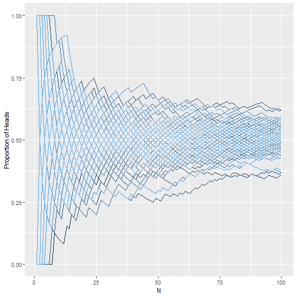

Confidence Intervals
Adam J Sullivan
Assistant Professor of Biostatistics
Brown University
Beginning Confidence Intervals
Statistical Estimates
- We have been discussing many types of estimates
- mean
- median
- min
- max
- These are all what we call point estimates.
- Estimates are almost always wrong.
Problems with Samples
- Each time we sample, we get a different mean.
- The center of the mean distribution is the true mean of the population but we have no way of knowing if our sample mean is the true mean.
- How do we deal with this?
What can we do?
- We know we are probably wrong.
- We wish to understand just how wrong we are.
- We use a confidence interval (CI)
Confidence Intervals
- We quanity how wrong by calculating a margin of error (MOE).
- We then add and subtract this from our estimate \[\text{CI} = \text{Point Estimate} \pm \text{MOE}\]
Margin of Error
- This is the maximum amount of error we expect in our point estimate.
- We wish to quantify this within a certain amount of confidence.
- We call this:
- "level of confidence"
- "confidence level"
- The margin of error is found by using the probability distribution of the point estimate.
Confidence Interval on the Mean
- We already know the distribution of the sample mean.
- This distribution is normal, so we can find which value of a normal would give us a certain confidence.
- Suppose we wish to have 95% confidence, then we wish to know what value of the normal distribution give us 95%.
- We need the values that would then cut 2.5% on the left of and 2.5% on the right. This would then mean 95% in the middle.
- We can do this in R.
Critical Values

# 2.5 Percentile
qnorm(0.025)
# 9.5 Percentile
qnorm(0.975)
## [1] -1.959964
## [1] 1.959964
What do we see?
- The normal is symmetric, so we can see that the values are -1.96 and 1.96.
- We can just use the positive value here as both will help the same way.
Making the Confidence Interval
\[\bar{x} \pm z * \dfrac{\sigma}{\sqrt{n}}\]
- Where:
- \(\bar{x}\) is the sample mean.
- \(z\) critical value assocatiated with % of confidence
- \(\sigma\) is population standard deviation.
- \(n\) is the sample size.
Example
data <- rbinom(10, 10, 0.3)
mn <- mean(data)
std.dev <- sd(data)
mn - 1.96*std.dev
mn + 1.96*std.dev
Example
## [1] 0.215969
## [1] 0.784031
What does this mean?
- It means that 95% of the intervals constructed like this will cover over thepopulation mean.
- Consider the following app:
- Agresti Shiny App
Interpretation
- The interpretation for the previous example is that we are 95% sure that the interval (0.215969, 0.784031) contains the mean.
- This is not the same as saying there is a 95% chance that the population mean is in this interval.
Interpretation
- While it seems similar, you must remember.
- There is one true population mean.
- You construct a sample, then you create a confidence interval.
- We said that with a 95% confidence interval we know that 95% of these intervals will cover the true mean.
- The interval is what moves each time.
What about when we do not know \(\sigma\)?
- We have shown an example of a binomial where we know the standard devation of the popultion, \(\sqrt{n*p*(1-p)}\).
- What happens when we do not know this?
- The Student's T Distribution!
Student's T Distribution
- Created by a man named Sealy Gosset in 1908.
- Published under the name "Student" as he was working for Guinness Brewery in Dublin at the time.
- Either he didn't want to be known or Guinness did not.
- His Desire what to understand the distribution of small samples of data.
- This was for his work in analyzing barley for beer where they may have only very few samples.
Standard Normal
- The standard normal is a normal distribution with mean 0 and variance 1.
- This is important since if we have: \[ X\sim N(\mu, \sigma^2)\]
- Then we can standardize this as:
\[Z = \dfrac{X-\mu}{\sigma}\]
In Sample Data
- We know that \(\bar{X}\) is normal such that \[ \bar{X}\sim N\left(\mu, \dfrac{\sigma^2}{n}\right)\]
- Then we can make this a standard normal:
\[Z= \dfrac{\bar{X}-\mu}{\sigma/\sqrt{n}}\]
Student's t Distribution
\[t_{n-1} = \dfrac{\bar{X}-\mu}{S/\sqrt{n}}\]
- Where:
- \(t_{n-1}\) represents a t distribution with \(n-1\) degrees of freedom.
- S is the sample variance: \[S=\dfrac{1}{n-1}\sum_{i=1}^n(x_i-\bar{X})^2\]
Student's t Distribution plots

Student's t Confidence Intervals
- Let's assume we have some data that we believe to be a from a normal distribution.
- We then would wish to create confidence intervals for the mean. \[\text{CI} = \text{Point Estimate} \pm \text{MOE}\] \[ \bar{x} \pm t * \dfrac{S}{\sqrt{n}}\]
Example
- We can simulate some data:
- 10 Samples from a \(N(63.8, 3.86)\) distribution.
data = rnorm(10, 63.8, 3.86)
- In real life we have data that is normal yet we do not know \(\sigma\).
Margin of Error
- We know that we need to calculate the margin of error. \[\text{MOE} = z*\dfrac{\sigma}{\sqrt{n}}\]
- We do not know \(\sigma\) but we can calculate \(S\). \[\text{MOE} = t*\dfrac{S}{\sqrt{n}}\]
Critical Value of \(t\)
# 2.5 percentile
qt(0.025, 9)
# 97.5 percentile
qt(0.975, 9)
## [1] -2.262157
## [1] 2.262157
What can we see?
- The critical value is 2.26.
- This is larger than the critical value for the standard normal.
- Why might this be?
Using R to Calculate
## [1] 53.99775
## [1] 75.43369
Recap
- We have the concept of a Confidence Interval, which is our sample mean plus or minus some margin of error.
- In order to find that margin of error we needed to use a critical value.
- Those critical values came from the "Normal" and "Student's t" Distributions.
- What does that mean?
Further Connection between Z and t
- If you have a t with over 30 samples, you can
Confidence Intervals without Normal Assumption
- What if we wish to find intervals without assuming we have a normal distribution?
- We can do a technique called bootstrapping
Bootstrapping
- A resampling technique.
- Similar to the permutation test which we did in lectures 12 and 13.
- We will describe how this works and then display a couple of ways to do this in R.
Resampling
- Recall the CLT.
- If you sample from a population over and over again, then the means follow a normal distribution.
- Most of the time we just have one sample.
- We are unsure of which sample that is.
Which sample are we?

Margin of Error
- We have discussed 2 ways to find the margin of error.
- Sometimes we do not see the ability to obtain a sample like ours over and over again.
- Other times we are interested in getting a confidence interval on something that is a bit harder for us to consider.
What is bootstrapping?

Bootstrap Basics
- We sample from the data with replacement.
- Then for this sample we calculate a statistic.
- We perform those steps over and over again until we arrive at a distribution of the statistic.
Bootstrap steps
- Choose the number of bootstraps to perform.
- Choose a sample size.
- For each Bootstrap a. Draw a sample with replacement equal to the sample size you set. b. Fit a model or calculate a statistic on this data.
- Calculate an average or range of values from the multiple bootstraps.